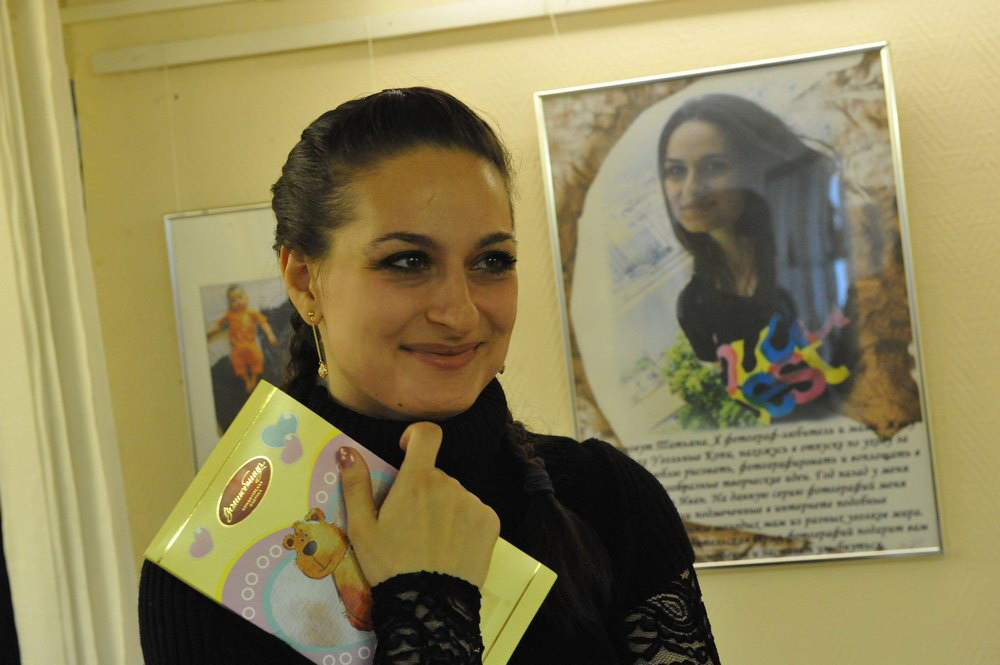
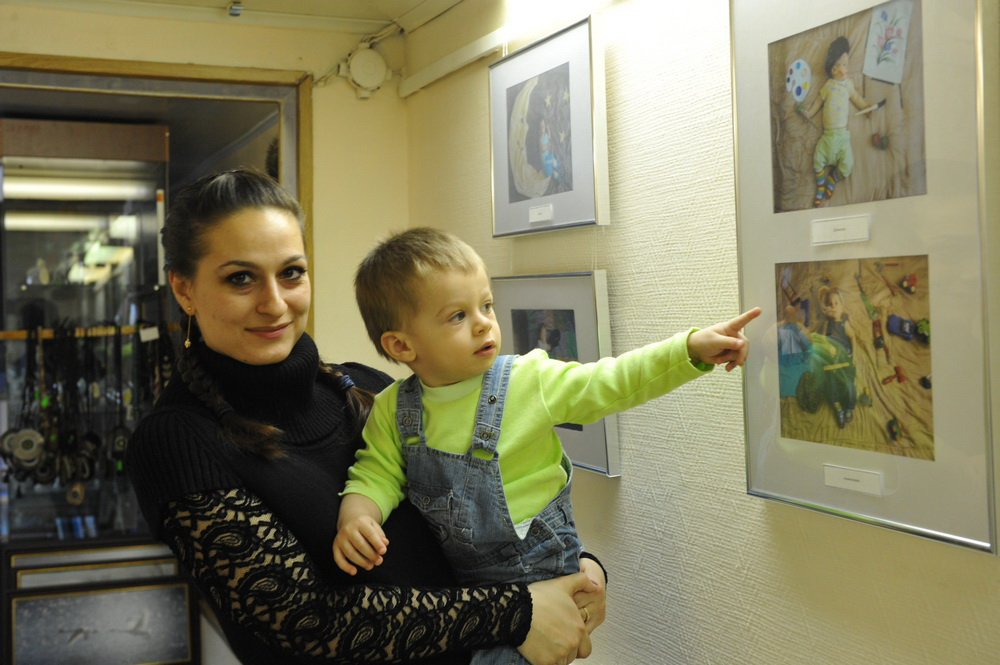

В марте 2012 года в Музейном Центре «Наследие Чукотки»
(г. Анадырь, Чукотский АО)
прошла выставка «Сны в ладошках»

Меня зовут Татьяна. Я фотограф и мама. Живу на Чукотке, обожаю рисовать, фотографировать и воплощать в жизнь разнообразные творческие идеи. На данную серию фотографий меня вдохновили подмеченные в интернете подобные фото-эксперименты молодых мам из разных уголков мира. Надеюсь, эта любительская серия фотографий подарит вам хорошее настроение и заставит улыбнуться.
 